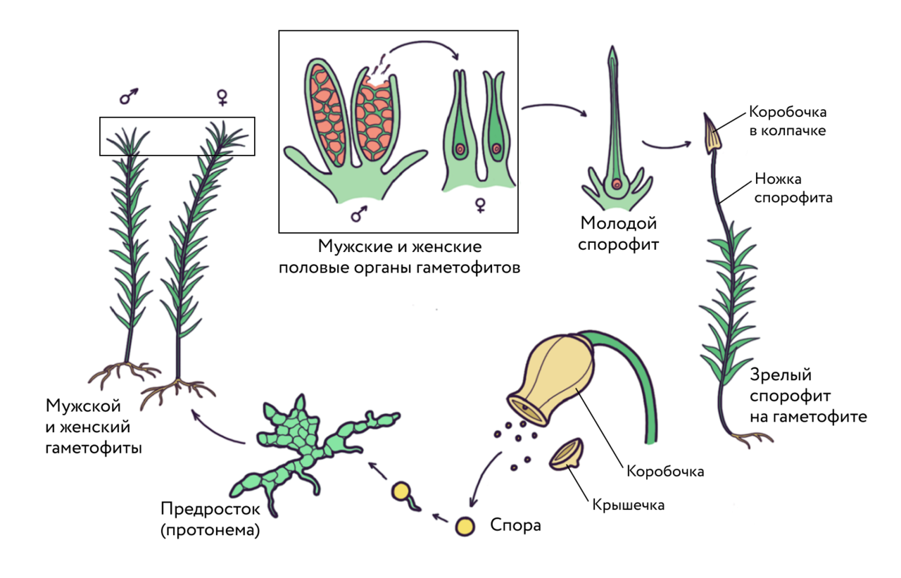
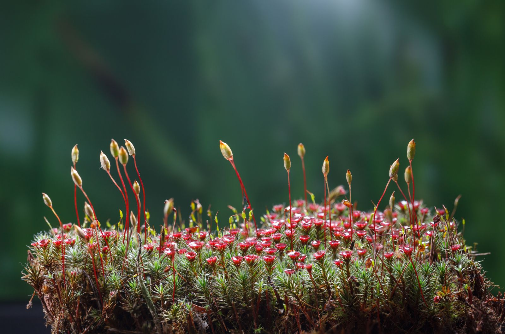
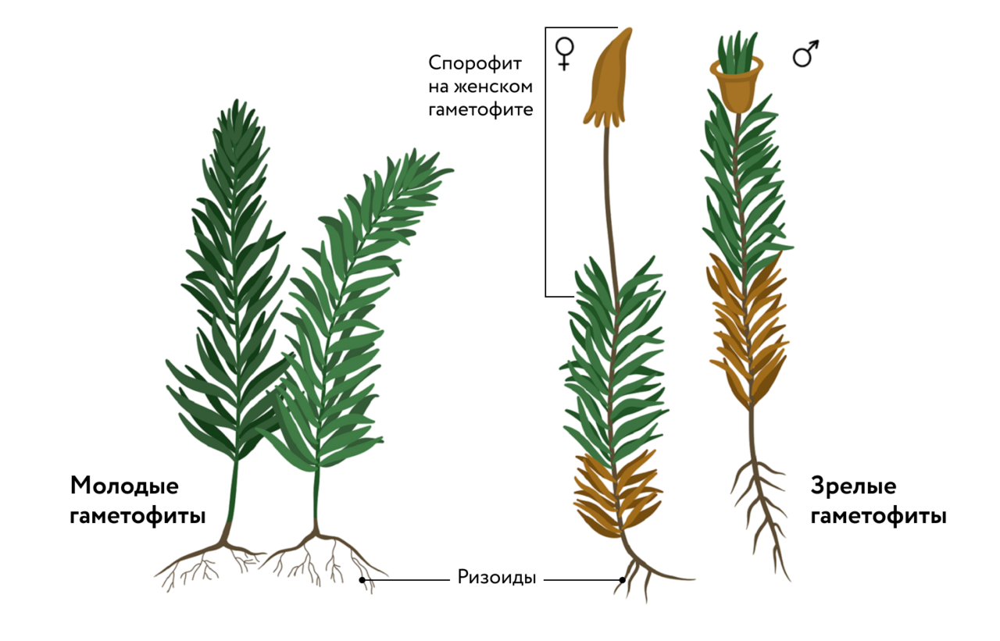

Мохообразные, или Мхи, — группа высших споровых растений,
насчитывающая более 30 тыс. видов. Изучением мхов занимается наука
бриология (от др.-греч. bryon [бри́он] — «мох»).
Небольшие размеры Мхи — травянистые формы высотой от 1 мм до 30 см,
водные мхи и мхи-эпифиты могут достигать в длину более полуметра. Как
правило, это многолетние, реже однолетние растения.
Небольшие размеры Мхи — травянистые формы высотой от 1 мм до 30 см,
водные мхи и мхи-эпифиты могут достигать в длину более полуметра. Как
правило, это многолетние, реже однолетние растения. Особенности
строения Тело мхов либо представляет собой слоевище, либо состоит из
стебля и мелких листьев. Корней нет, но у многих видов есть ризоиды.
Ткани развиты слабо. Тело мхов в основном состоит из клеток
фотосинтезирующей ткани, покровная и механическая ткани не выражены,
настоящая проводящая ткань отсутствует.
Небольшие размеры Мхи — травянистые формы высотой от 1 мм до 30 см,
водные мхи и мхи-эпифиты могут достигать в длину более полуметра. Как
правило, это многолетние, реже однолетние растения. Особенности
строения Тело мхов либо представляет собой слоевище, либо состоит из
стебля и мелких листьев. Корней нет, но у многих видов есть ризоиды.
Ткани развиты слабо. Тело мхов в основном состоит из клеток
фотосинтезирующей ткани, покровная и механическая ткани не выражены,
настоящая проводящая ткань отсутствует. Обитатели влажных мест Обычно
населяют влажные затенённые места, часто в непосредственной близости
от водоёмов. Есть полностью водные виды. Мхи не только растут в
заболоченных местах, но и создают условия для их возникновения, так
как их тела впитывают и удерживают большое количество воды.
Особенности размножения Мохообразные размножаются бесполым и половым
путём. Бесполое размножение осуществляется спорами и вегетативным
путём — частями слоевища или участками стебля. У некоторых видов есть
специализированные органы вегетативного размножения — выводковые
почки. Половое размножение происходит с участием половых клеток
(гамет). Для передвижения сперматозоидов к яйцеклеткам необходимо
присутствие капельно-жидкой влаги.
Особенности жизненного цикла У мхов наблюдается чередование поколений.
В отличие от других высших растений, у мохообразных в жизненном цикле
преобладает половое поколение (гаметофит), на котором образуются
половые клетки (гаметы). Прямо на гаметофите из оплодотворённой
яйцеклетки (зиготы) развивается бесполое поколение (спорофит). Обычно
спорофит представляет собой коробочку на ножке, в коробочке
развиваются споры — одноклеточные структуры бесполого размножения.
Мелкие и лёгкие споры разносятся ветром и, попав в благоприятные
условия, прорастают сначала в тонкую нить — предросток, или протонему
(от др.-греч. protos [про́тос] — «первый» и nema [нэ́ма] — «нить»). На
протонеме образуются почки, из них — побеги или слоевища.

Размножение кукушкина льна
Кукушкин лён
Обычный род влажных лесов умеренной зоны. Обычно растёт в виде куртин из
множества тесно расположенных особей. Стебель может достигать в длину 30
см, содержит вытянутые мёртвые клетки, которые выполняют функцию
проведения и накопления воды. В нижней части стебля имеются тонкие
нитевидные выросты — ризоиды, выполняющие функцию поглощения воды и
минеральных солей. Мелкие листочки не имеют жилок и состоят из нескольких
слоёв фотосинтезирующих клеток. Зелёные растения — это половое поколение
(гаметофит). Мох кукушкин лён — раздельнополое, или двудомное, растение.
На верхушках гаметофитов в особых половых органах образуются гаметы: на
женских растениях — яйцеклетки, на мужских — сперматозоиды. Для успешного
оплодотворения нужна вода, с помощью которой сперматозоиды могли бы
переплыть на женские растения и достичь яйцеклеток. Для этого достаточно
дождя или обильной росы, капли которой лягут на верхушки растений мха.

Кукушкин лён

Строение кукушкина льна
Сфагнум
Сфагновые мхи широко распространены в умеренной зоне Северного полушария и
образуют верховые (сфагновые) болота. По мере роста сфагнума нижняя его
часть оказывается под толщей более молодых листочков, отмирает и начинает
разлагаться. Разложение мха происходит без доступа воздуха и в условиях
почти полного отсутствия микроорганизмов. Мох практически не гниёт, он
превращается в торф. Торф удерживает влагу, происходит заболачивание
лесов. Сфагнум не имеет ризоидов, он впитывает воду всей поверхностью
тела. Мелкие светло-зелёные листья, покрывающие стебель и ветви, состоят
из клеток двух типов. Узкие зелёные фотосинтезирующие клетки образуют
сетчатую структуру, в которой происходит движение органических веществ.
Между зелёными клетками находятся крупные прозрачные мёртвые клетки, от
которых остались только оболочки. Это водозапасающие клетки. Через поры в
их клеточных стенках вода проникает внутрь из окружающей среды. Сфагнум
(от др.-греч. sphagnos [сфа́гнос] — «губка») способен поглотить воды в 20
раз больше, чем весит само растение. Ткани мха содержат фенол (карболовую
кислоту), который имеет мощное бактерицидное действие.